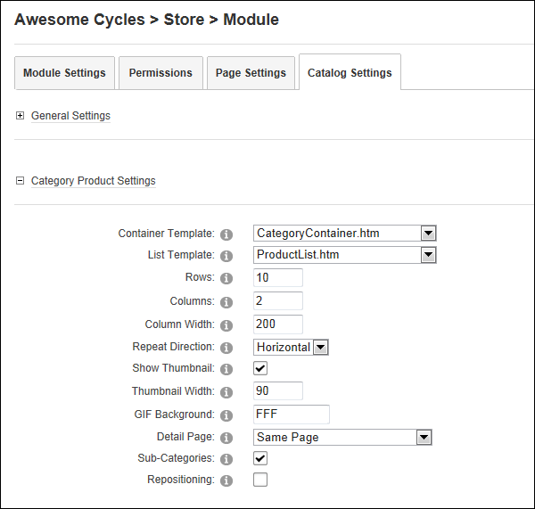

Managing Category Product Settings
How to manage the layout of category product listings in the Store Catalog module.
Prerequisite. The "Show Category Products" field must be checked in the General Settings section to configure these settings. See "Managing Store Catalog General Settings"
- Go to the Store Catalog module.
-
- Select the Catalog Settings tab.
- Maximize
 the Category Product Settings section and modify any of the following settings.
the Category Product Settings section and modify any of the following settings. - At Container Template, select the template to be applied to the default Catalog page. The template included with the Store is called CategoryContainer.htm.
- At List Template, select the template to be applied to the default Catalog page. The templates included with the Store are called ProductList.htm and ProductListFullInfo.htm templates. The default setting is ProductList.htm.
- In the Rows text box, enter the number of row of items to be displayed across the page. The default setting is 10.
- In the Columns text box, enter the number of columns of items to be displayed down the page. The default setting is 2.
- In the Column Width text box, enter the pixel width of each column. The default setting is 200.
- In the Repeat Direction text box, select either Horizontal or Vertical to set the direction that items incrementally repeat. E.g. down the page or across the page.
- At Show Thumbnail, select from these options:
- Mark
 the check box to display a thumbnail image. This is the default setting.
the check box to display a thumbnail image. This is the default setting. - Unmark
 the check box to hide the thumbnail image. If this option is selected, skip the next step.
the check box to hide the thumbnail image. If this option is selected, skip the next step.
- In the Thumbnail Width text box, enter the pixel width of each thumbnail image. The default setting is 90.
- In the GIF Background text box, enter the hex value of the background color to use with GIF image format. Valid values: #FFFFFF, #f00, FF0000, F09, etc.
- At Detail Page, select the page where product details are displayed. Choose Same Page to open the product details on the same page. This is the typical behavior however if you have multiple Store Catalog modules on your site and you want the product details to be displayed on that page, then select that page name.
- At Sub-Categories, select from these options:
- Mark the check box to include in the list products of the sub categories of the selected category.
- Unmark the check box to disable.
- At Repositioning, select from these options:
- Mark the check box to apply repositioning at the top of the module rather than at the top of the page when a user is viewing the catalog.
- Unmark the check box to disable repositioning.

-
Click the Update button.